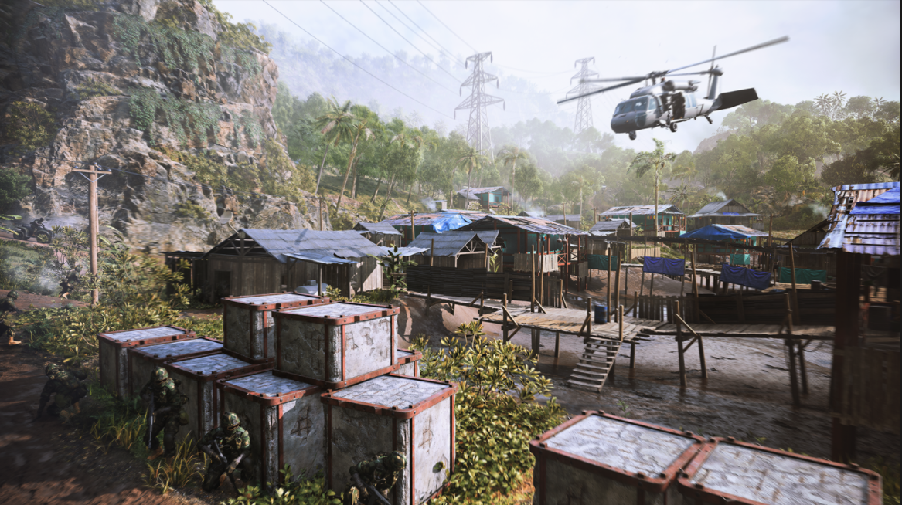
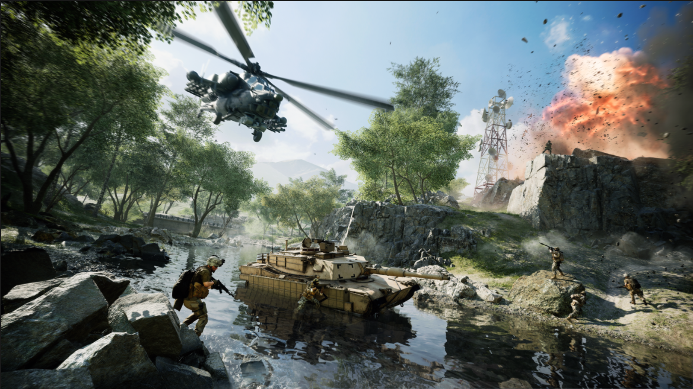

- Science
- Space
- SpaceX
- Battlefield 2042
Battlefield 2042 Delayed Until November
The next Battlefield game will stay in development a little longer.
EA has announced that Battlefield 2042 will be delayed until November 19, 2021, pushing the release date by almost a month after its original October 22 release date.
In a press release , DICE GM Oskar Gabrielson cites ongoing complications with the COVID-19 pandemic. “Given the scale and scope of the game, we had hoped our teams would be back in our studios together as we move towards launch. With the ongoing conditions not allowing that to happen safely, and with all the hard work the teams are doing from home, we feel it is important to take the extra time to deliver on the vision of Battlefield 2042 for our players.”
Battlefield 2042 is EA and DICE’s first Battlefield game since 2018’s Battlefield 5, and it is the latest game to be hit by a delay in 2021 .
Unlike some other major releases originally planned for 2021, Battlefield 2042 will still launch this year and won’t impact EA’s financial forecast for the fiscal year 2022.
EA also says an update on the Open Beta for Battlefield 2042 will be announced later this month.
Battlefield 2042 will be set in the near future and will include hallmarks of the series such as large-scale battles and huge open maps. In addition, Battlefield 2042 is set during an environmental disaster so players will contend with natural disasters like tornadoes appearing on the map as well.
 A new addition to Battlefield 2042 is a mode called Portal which will let players create custom games using assets from Battlefield 2042, Battlefield 1942, Battlefield Bad Company 2, and Battlefield 3.
Check out IGN’s Battlefield 2042 preview for our take on the next large-scale military shooter.
Matt T.M. Kim is IGN's News Editor. You can reach him @lawoftd.
More from The Verge
SpaceX’s Inspiration4 crew returns to Earth, capping first fully private mission in orbitIn This Article
Battlefield 2042 is a first-person shooter that marks the return to the iconic all-out warfare of the franchise. In a near-future world transformed by disorder, adapt and overcome dynamically-changing battlegrounds with the help of your squad and a cutting-edge arsenal.
Developers: DICE (Digital Illusions CE), Ripple Effect Studios
Publishers: Electronic Arts
Franchises: Battlefield
Features: Online Versus Multiplayer
Release Date: November 19, 2021
Platforms: PC, PlayStation 5, PlayStation 4, Xbox One, Xbox Series X|S
Genres: Shooter